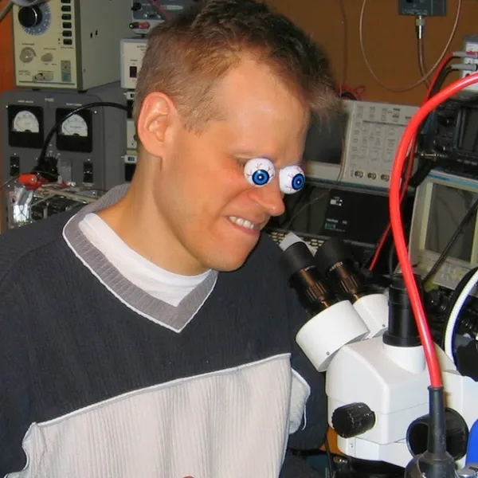
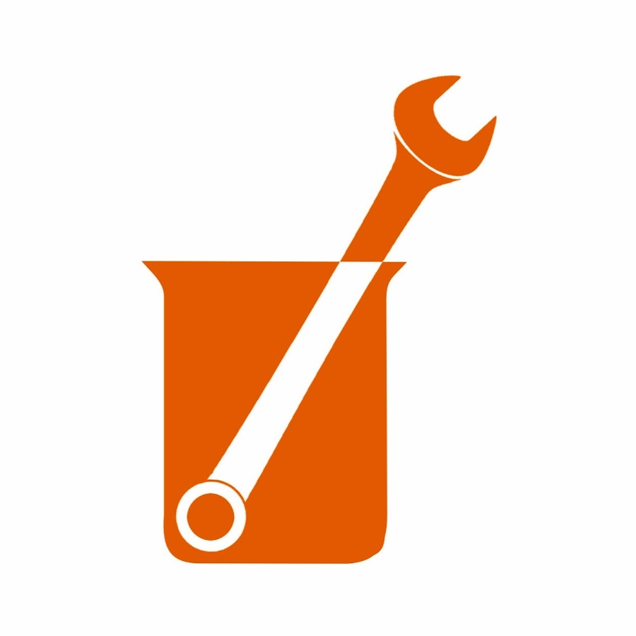
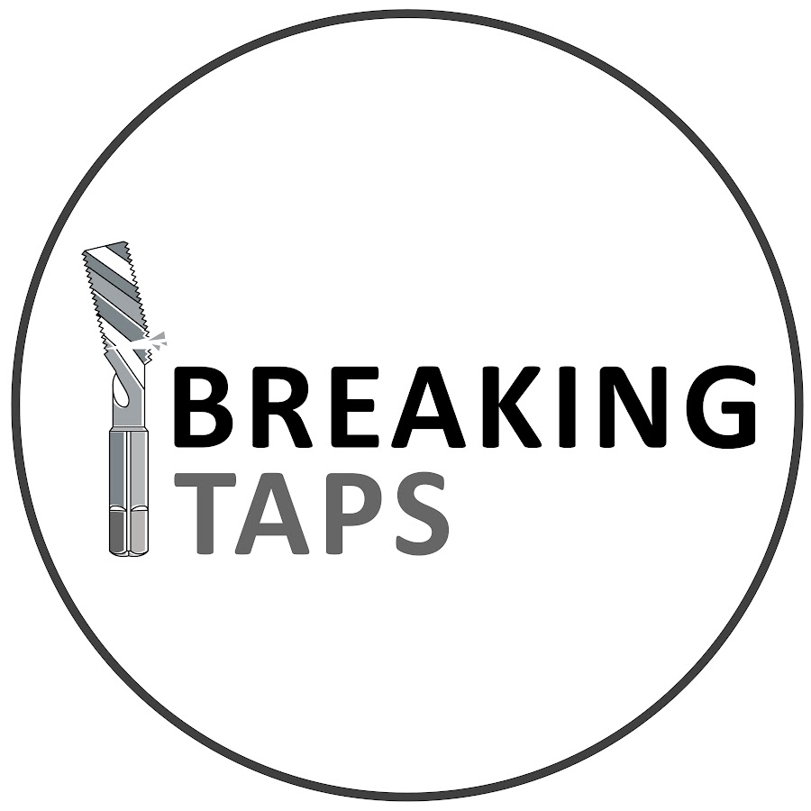
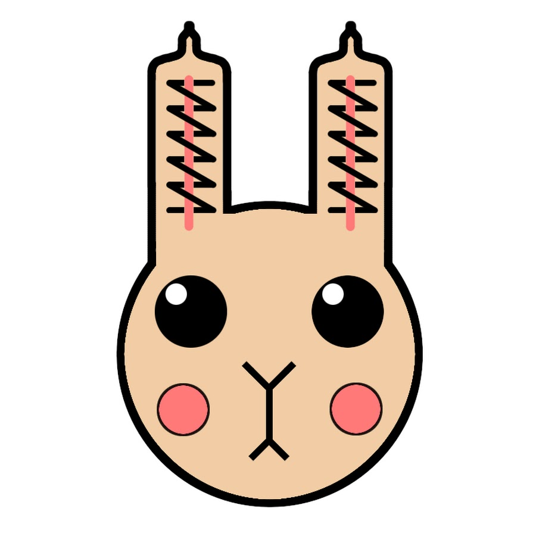

A majority of my personal interests lie within the electro-mechanical realm of engineering.
In addition to the projects listed within the Projects section of this website,
I enjoy working on vintage electronics of all types. A significant portion of this involves
vacuum-tube electronic test equipment, for which I enjoy performing full mechanical and
electrical restorations. Being born in the digital era (2002), I personally find analog
electronics to be especially interesting and enjoy taking care of these antique pieces from
both a historical antiquarian perspective as well as for the sake of pure engineering appreciation.
I am also interested in the more modern (and practical) side of electronics, and I have
firsthand experience with projects involving the AVR family, Raspberry Pi family, and ESP32.
In a similar vein, I have an ongoing project in which I am attempting to create my own
self-contained 8-bit computer. It is based on my favorite microprocessor, the Mostek 6502, which was a
crucial component of the 1970s computer revolution.
Outside of strictly engineering endeavors, I also enjoy playing video games—both new and retro.
Currently, the games I frequent most are online multiplayer games that I use to keep in touch with
old and new friends, such as Lethal Company, Minecraft, Super Smash Bros, and Terraria.
Lastly, thank you for taking the time to look through my website. If you have any questions, complaints,
or criticisms, please let me know through the contact information listed below.
A good deal of my interests are inspired by online project showcases.
Here are a few of my favorite Youtube Channels:

Mr Carlson's Lab
Applied Science
Breaking Taps
Usagi Electric